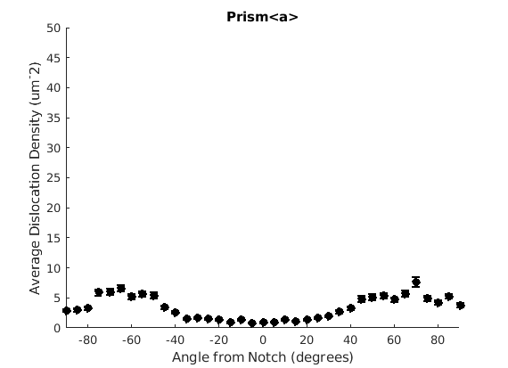
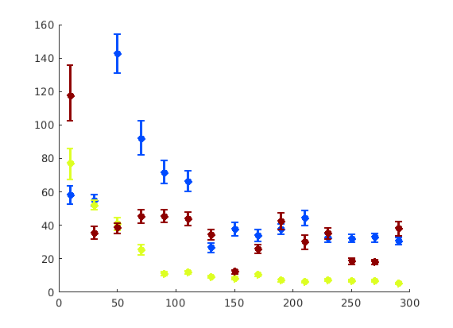

Contents
Demo GND Analysis Script
This script shows one approach to analyzing GND data based on spatial distribution of GNDs. This was coded to allow for the analysis of notch tip data.
load('Step2.mat') setMTEXpref('xAxisDirection','east'); setMTEXpref('zAxisDirection','outOfPlane');
Allow the user to define the location of the notch.
Since the notch might move between EBSD maps, we need an easy way for the user to input the notch location. This is done graphically, where the user will click the 'edge' of the notch.
figure(27), clf plot(grains) fprintf('Click on the edge of the notch.'); notch = ginput(1); theta = atan2(ebsd.y - notch(2), ebsd.x - notch(1)); theta(theta/degree < -90) = theta(theta/degree < -90) + 2*pi; hold on, plot(notch(1),notch(2),'xr','LineWidth',5)
Click on the edge of the notch.
Caking the Data - By Angle
We may wish to look at how some parameter varies by angle. This section will 'cake' the section by angle, producing slices of angular width 'thetaStep'. Here we look at how the geometric mean of the dislocation density varies by angle.
thetaStep = 5; % The user may wish to plot the data as well. %figure(107); %plot(ebsd, GND(7).data), hold on %plot(grains.boundary) for j = 1:7 figure(j), clf realDat = GND(j).data > 0; for i = [-thetaStep/2:thetaStep:180+thetaStep/2] cond = (theta > i * degree & theta < (i+ thetaStep) * degree); [bootLow, bootVal, bootHigh] = bootStrapGND(GND(j).data(cond & realDat')); figure(j), hold on, errorbar(i + thetaStep/2 - 90, bootVal,bootVal-bootLow,bootHigh-bootVal,... 'color','k','LineWidth',2,'Marker','o','MarkerFaceColor','k') % This will plot the boundaries of the cakes on the GND map previously plotted if you're interested. % x = ebsd.x(cond); y = ebsd.y(cond); % k = convhull(x,y,'simplify', true); % figure(107),hold on, plot(x(k), y(k),'k-', 'LineWidth', 2) end xlabel('Angle from Notch (degrees)') ylabel('Average Dislocation Density (um^-2)') title(GND(j).name); axis([-90 90 0 50]) end hold off


Caking the Data - By Radius
This will calculate some values by radius, moving AWAY from the notch. Typically when you're looking at radius, you're also interested in some specific angle, so here we look at 30, 90, and 150 degrees with respect to the notch, with cake widths of 15 degrees. We will plot the geometric mean of the GND density for every 20 pixels of radius within each cake.
radiusStep = 20; thetaWidth = 15; radius = sqrt((ebsd.y - notch(2)) .^2 + (ebsd.x - notch(1)) .^2); %plot(ebsd, GND(7).data) %plot(grains.boundary) figure(1972), plot(grains.boundary) kk = jet(150); for tC = [30 90 150] for j = 7 realDat = GND(j).data > 0; for i = radiusStep/2:radiusStep:300 cond = (theta > (tC - thetaWidth) * degree & theta < (tC + thetaWidth) * degree) & ... (radius > i & radius < i + radiusStep); [bootLow, bootVal, bootHigh] = bootStrapGND(GND(j).data(cond & realDat')); figure(165), hold on, errorbar(i, bootVal,bootVal-bootLow,bootHigh-bootVal, ... 'color',kk(tC,:),'LineWidth',2,'Marker','o','MarkerFaceColor',kk(tC,:)) %x = ebsd.x(cond); y = ebsd.y(cond); %k = convhull(x,y); %figure(1972), hold on, plot(x(k(2:end)), y(k(2:end)),'-','LineWidth',2, 'Color', kk(tC,:)), hold off end figure(j) xlabel('Distance from Radius (pixels)') ylabel('Average Dislocation Density (um^-2)') title(GND(j).name); figure(j), set(gca, 'YScale', 'log') end end